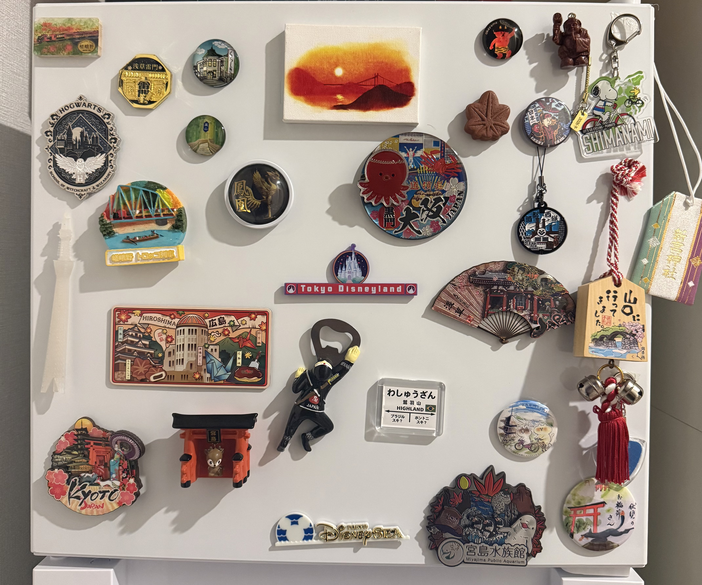
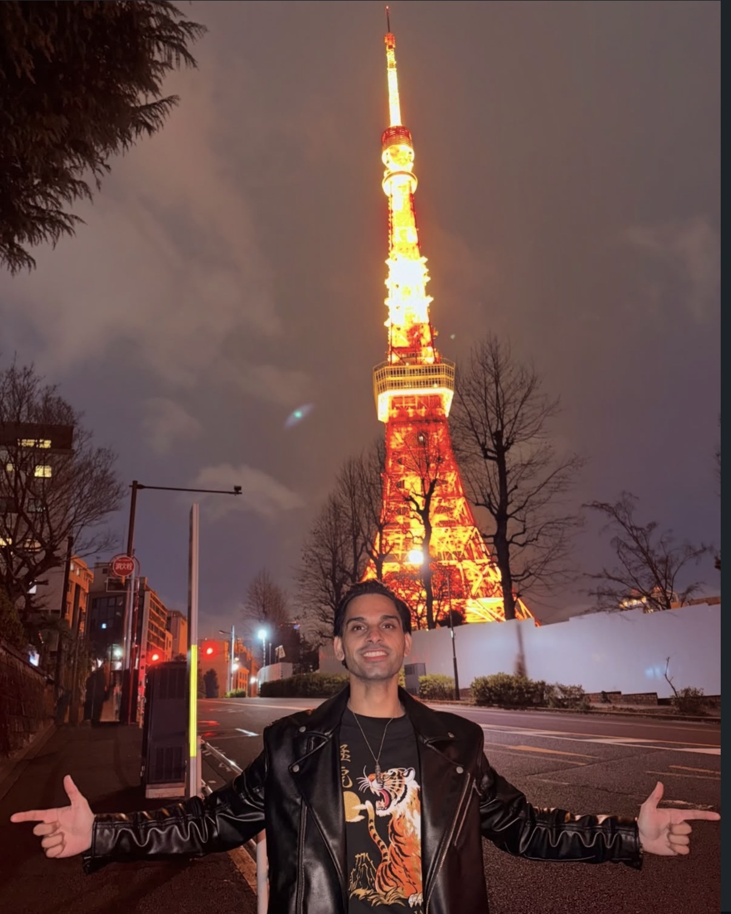
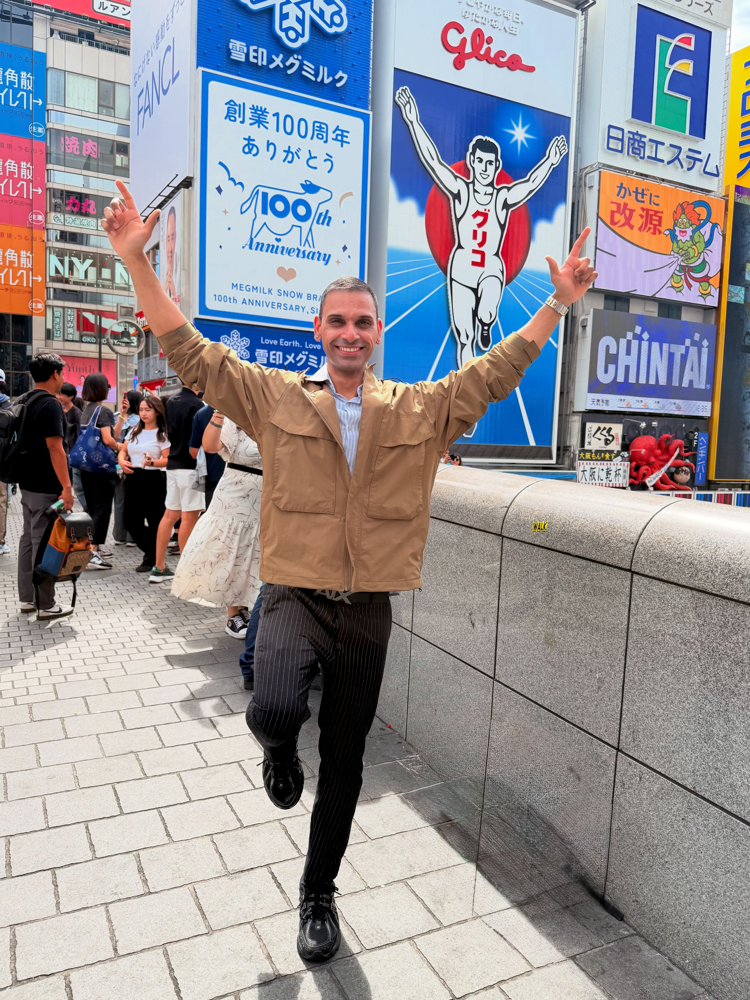
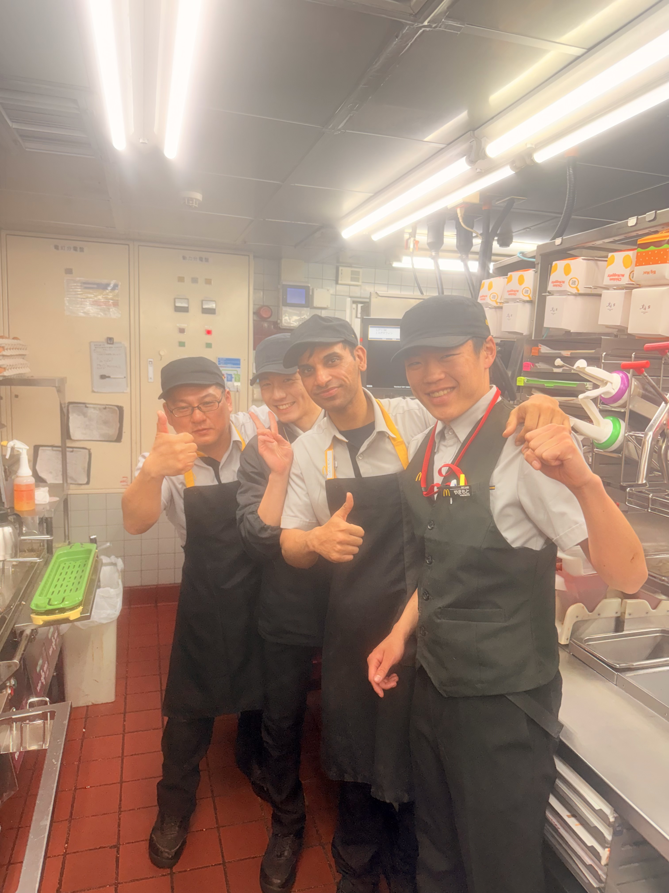

ショキーン
ガウラヴ
挑戦心のある人
挑戦心のある人

自分がやると決めたことを信じて最後までやり抜くタイプです。
自信を持って行動することを大切にしています。今の自分になるまでに、多くの失敗を経験してきました。しかし、その失敗から学び、成長することで今の自分があります。
私はチームで働くことが得意です。これまでに50人以上のインド人と100人以上の日本人と一緒に仕事をした経験があります。
今までにインドの会社とフランスの会社で正社員として働き、日本の会社では5社でアルバイトとして働きました。

下の項目をクリックして、日本での私の経験や挑戦をご覧ください。
N3レベル



私は英語とヒンディー語を20年以上学んできましたが、人前でスピーチをしようと思ったことは一度もありませんでした。
しかし、日本語を約1年間学んだ後、マクドナルドで働いていた際に、クルーの皆さんへ感謝の気持ちを伝えるため、全員の前で短いスピーチをする機会がありました。
チームの一員として一緒に働く機会を与えてくださったことへの感謝を、自分の言葉で伝えることができました。この経験を通して、日本語で自分の気持ちを伝えることの喜びと、自分自身の成長を実感しました。
